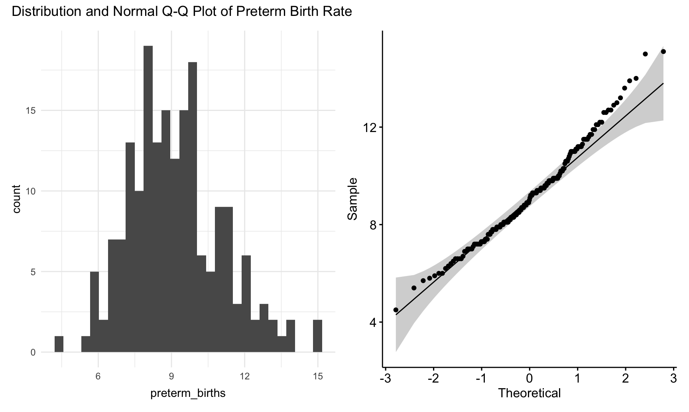
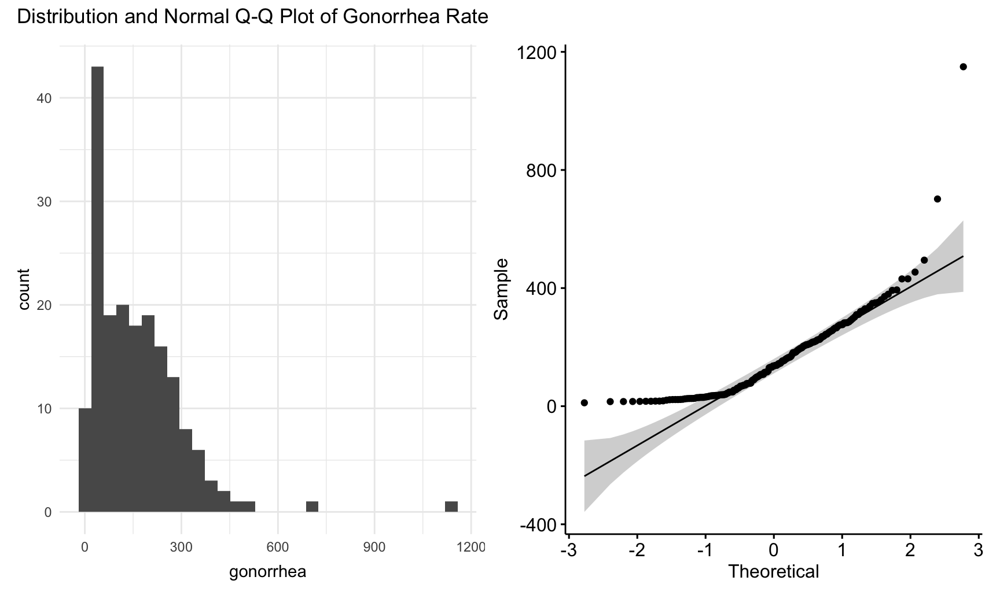

[summary of results goes here]
The NTA Neighborhood data contains data from 188 neighborhoods in New York City, defined by Neighborhood Tabulation Areas (NTAs), which were generated from whole census tracts from 2010 US Census data. Created by aggregating adjacent census tracts, the NTA neighborhood dataset is a happy medium between the high sampling error of NYC’s overly granular 2,168 census tracts and the broad strokes of the 59 community districts. However, because their primary boundary creation consideration is population, NTAs do not accurately represent the boundaries of NYC’s historic neighborhoods.
preterm_births: percent preterm births (<37 weeks gestation) among all live births in 2010-2014smm: crude rate of severe maternal morbidity (SMM) per 10,000 deliveries in 2008-2012gonorrhea: crude rate of gonorrhea cases diagnosed per 100,000 people of all ages in 2014-201515 potential predictor variables were identified after cleaning and transformation. Predictor selection was driven by subject matter knowledge, literature review, dataset constraints, and common sense.
We will begin with assuming a linear relationship between predictors and outcome and move to more complex relationships via transformation if a linear model is a poor fit.
Models will be selected with a stepwise automatic model selection process, which iteratively adds and removes predictors to the model until it converges, using AIC as a metric. Please note that there is some debate regarding the statistical validity of stepwise model selection, further discussed in the appendix. For our purposes, we will use it for exploratory analysis due to ease of implementation and its intuitive approach and approach our results critically with respect to the algorithm’s pitfalls.
Models will be judged on: * Satisfaction of assumptions for their respective method * Best fit as judged by Akaike information criterion (AIC), which considers both goodness-of-fit (rewarding models that explain higher variation in the outcome) and model parsimony (penalizing for too many predictors). AIC is applicable to many distributions, including linear, Poisson, and negative binomial.
We have three outcome variables of interest: preterm births, severe maternal morbidity (SMM), and gonorrhea.
We start with univariate analyses dependent variables using histograms, Q-Q plots and Shapiro tests for normality. Ultimately, it is the residual distribution that matters in multivariable regression, but it never hurts to visualize data.
#read in data
project_df = read.csv("./data/clean_dataset.csv")
#separate outcomes into separate dataframe
outcome_df = project_df %>%
dplyr::select(preterm_births, smm, gonorrhea)
write.csv(outcome_df, 'data/outcomes.csv', row.names = FALSE)
#histograms
preterm_hist = ggplot(outcome_df, aes(x = preterm_births)) + geom_histogram()
smm_hist = ggplot(outcome_df, aes(x = smm)) + geom_histogram()
gonorrhea_hist = ggplot(outcome_df, aes(x = gonorrhea)) + geom_histogram()
#q-q plots
preterm_qq = ggqqplot(outcome_df$preterm_births)
smm_qq = ggqqplot(outcome_df$smm)
gonorrhea_qq = ggqqplot(project_df$gonorrhea)
#create patchwork plots
preterm_hist + preterm_qq
smm_hist + smm_qqgonorrhea_hist + gonorrhea_qq
#run shapiro-wilk tests
outcome_df %>% shapiro_test(preterm_births, smm, gonorrhea) %>%
knitr::kable(digits = 3)| variable | statistic | p |
|---|---|---|
| gonorrhea | 0.808 | 0.000 |
| preterm_births | 0.982 | 0.016 |
| smm | 0.933 | 0.000 |
Outcome variables are likely sampled from a non-normal distribution, as indicated by significant p-values for the Shapiro test and fat tails in the Q-Q plots: not a deal-breaker, since residuals are what are important, but certainly presents the possibility that linear regression may not be the best model for our data.
Before we start building models, let’s check for potential multicollinearity among predictors, since stepwise model selection will exacerbate any existing multicollinearity in our model.
To summarize simple correlations between variables, we’ll construct Pearson correlation matrix of predictors, using pair-wise (instead of case) deletion of datapoints with missing values.
#create dataset of predictors ONLY
predictors_df = project_df %>%
dplyr::select(-c("nta_name","nta_code", "preterm_births", "gonorrhea", "smm", "clinics", "community_health_centers", "non_pcmd", "clinics_and_chc_count"))
write.csv(predictors_df, 'data/predictors.csv', row.names = FALSE)
N <- rcorr(as.matrix(predictors_df), type = c("pearson")) #pair-wise deletion
corrplot::corrplot(N$r,
type = "upper",
method = "square",
addCoef.col = "black",
diag = FALSE,
number.cex = .6,
tl.col = "black",
tl.cex = .9,
tl.srt = 45)There appears to several highly correlated potential predictors in our dataset, with strong positive and negative relationships present. There is a strong possibility of multicollinearity in our final models.
Most starkly, race remains highly correlated with health and SES-related outcomes at a neighborhood level. For example, there is a strong negative correlation between percent population that identifies as white and levels of poverty, unemployment, and late or no prenatal care. This relationship becomes positive when considering percent population that identifies as Hispanic. Surprisingly, proportion of population that identifies as black have weak to no relationship with SES-related outcomes like low educational attainment or poverty, but the strongest relationship with late or no prenatal care (R = 0.54).
We’ll keep these relationships in mind as we interpret our results. Select an outcome from the dropdown and read on!
Stepwise model selection, the method we used to select our model, is a naive, greedy algorithm. This means that it uses a simple, shortcut rules that select the optimal step at each stage, and had a tendency to converge to local instead of global optima. This article details some of its critiques. The most important for our purposes is that stepwise model selection encourages users to blindly input large numbers of predictors without consideration of motivations or prior knowledge. This sort of ‘ransacking’ of data for hidden associations is counter to the guiding principles of epidemiology. We attempted to address this criticism by selecting a set of potential predictors logically associated with the outcomes, and viewed our results in the context of existing literature.
Some potential other directions to build off our work:
Ayeshra Acharya, Zaynub Ibrahim, Cynthia Liu, Shelley Shen
Data visualizations and analyses performed using RStudio (v1.3.1093-1) and QGIS (v3.16 1 'Hannover').
Interaction added to visualizations with plotly (v1.55.2).